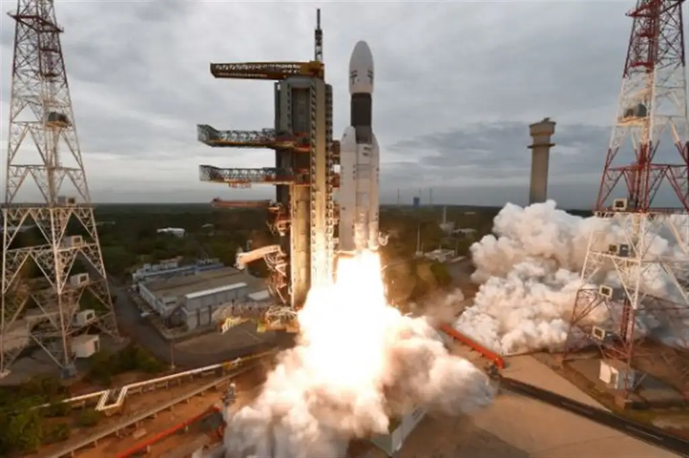

Chandrayaan-3 (/ˌtʃʌndrəˈjɑːn/ CHUN-drə-YAHN) is the third mission in the Chandrayaan programme, a series of lunar-exploration missions developed by the Indian Space Research Organisation (ISRO).[7] Launched on 14 July 2023, the mission consists of a lunar lander named Vikram and a lunar rover named Pragyan, similar to those launched aboard Chandrayaan-2 in 2019.
Chandrayaan-3 was launched from Satish Dhawan Space Centre on 14 July 2023. The spacecraft entered lunar orbit on 5 August, and the lander touched down near the Lunar south pole[8] on 23 August at 18:03 IST (12:33 UTC), making India the fourth country to successfully land on the Moon, and the first to do so near the lunar south pole.[9][note 1] On 3 September the lander hopped and repositioned itself 30–40 cm (12–16 in) from its landing site.[13]
The Vikram lander and Pragyan rover were set to sleep on 2 and 4 September respectively due to depleting solar power with sunset at the landing site. The lander and rover were scheduled to start working again at local sunrise on 22 September.[14][15] However on 22 September, Vikram Lander and Pragyan rover missed Wake-up call.[16][17]

Background
Further information: Chandrayaan programme
See also: Lunar south pole
On 22 July 2019, ISRO launched Chandrayaan-2 on board a Launch Vehicle Mark-3 (LVM3) launch vehicle consisting of an orbiter, a lander and a rover.[18] The lander was scheduled to touch down on the lunar surface on 6 September 2019 to deploy the Pragyan rover. The lander lost contact with mission control, deviated from its intended trajectory while attempting to land near the lunar south pole, and crashed.[19][20]
The lunar south pole region holds particular interest for scientific exploration. Studies show large amounts of ice there. Mountainous terrain and unpredictable lighting protect the ice from melting, but they also make landing scientific probes there a challenging undertaking. The ice could contain solid-state compounds that would normally melt under warmer conditions elsewhere on the Moon—compounds which could provide insight into lunar, Earth, and Solar System history. For future crewed missions and outposts, ice could also be a source of drinking water and of hydrogen for fuel and oxygen.[21][22]
The European Space Tracking network (ESTRACK), operated by the European Space Agency (ESA), and Deep Space Network operated by Jet Propulsion Laboratory (JPL) of NASA are supporting the mission.[23] Under a new cross-support arrangement, ESA tracking support could be provided for upcoming ISRO missions such as those of India's first human spaceflight programme, Gaganyaan, and the Aditya-L1 solar research mission. In return, future ESA missions will receive similar support from ISRO's own tracking stations.[24]